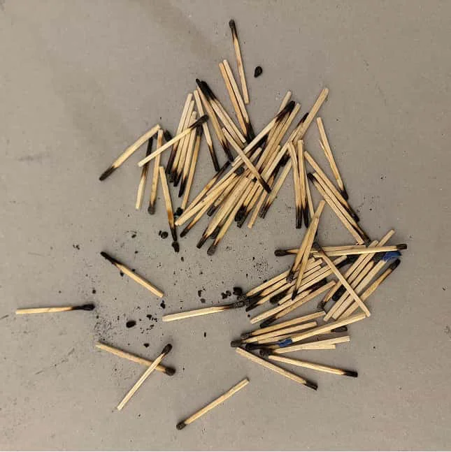
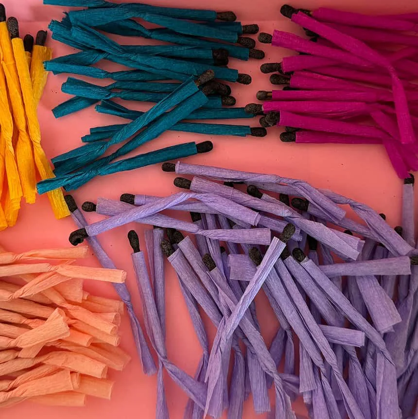
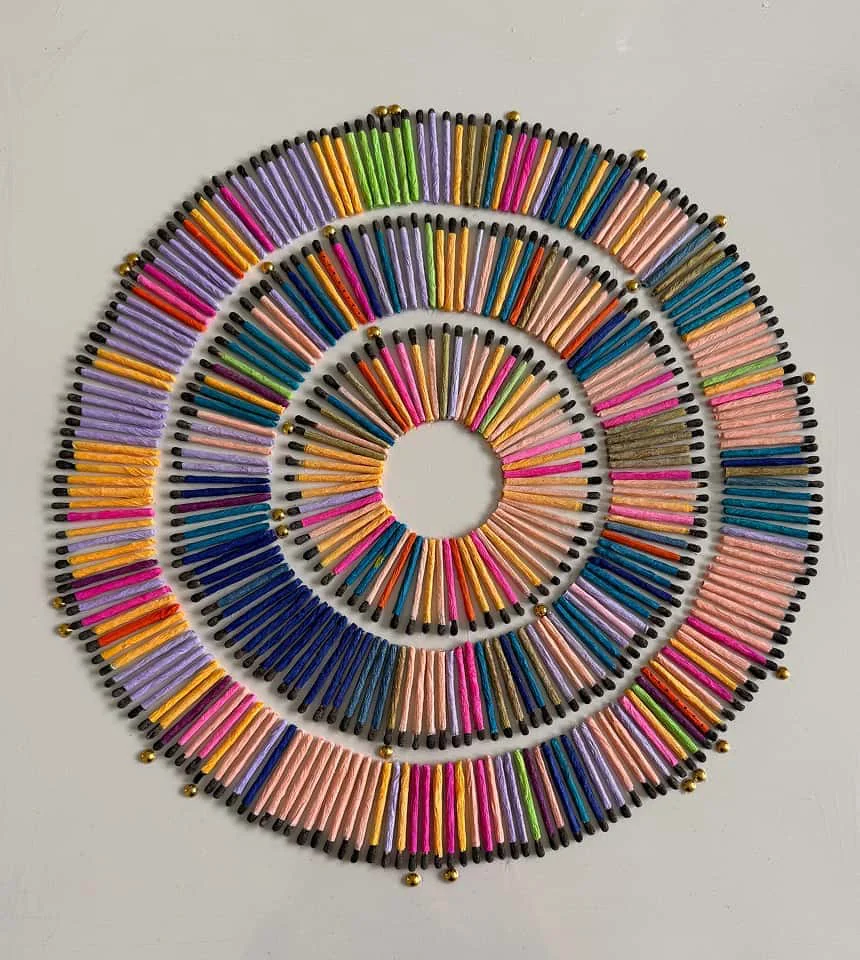
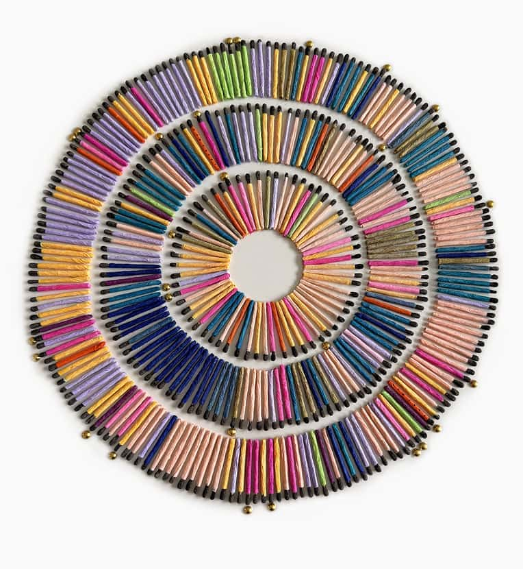
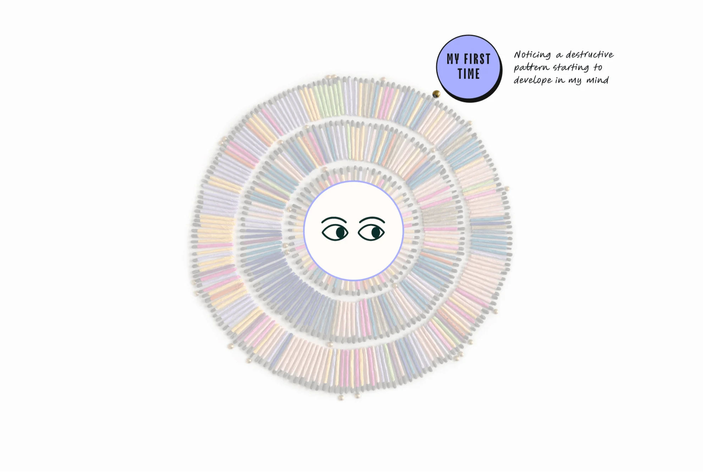

EVERY DAY IS A GIFT You WILL Never Get Back.
A data physicalization and visualization about the universal pain of break ups, the fragility of mental health and the path to recovery and joy.
Or how I learned to view each day as a gift—no matter if it’s filled with joy, sadness, confusion, or chaos.
1Physicalizing
Emotions
The process behind the physicalization that represents 365 days of my emotional life during a challenging time. It tells the story of the materials I used and the creative decisions they inspired.

Instead
of painting the MATCHES,
I wrapped each ONE AS a tiny gift.
That decision helped define the concept and gave its name to the project. What fascinates me about physicalizations is the virtuous feedback loop they create—where the material informs the concept, and the concept evolves through the process.

My working sessions unexpectedly became an extension of my meditation practice. They allowed for contemplation and required me to be fully present while reflecting on the past from a new perspective.


The task was emotionally challenging. But by working in silence—wrapping, photographing, and pasting each match—I created space for gratitude. I honored each day, no matter how painful or joyful, because each one brought me to the present moment.
Although matches may appear similar at first glance, each one is distinct, much like our days.

after 4
months of wrapping and pasting...
the physicalization was finished on april 6,
2025

hours spent
- Wrapping matches
- 10
- 31.2%
- Assembling/Making pics
- 6
- 18.7%
- Editing pics
- 12
- 37.5%
- Animating
- 4
- 12.5%
- Total*
- 32
- 100%
2The
Visualization
This interactive visualization complements the physicalization; it captures my journey throughout the year—before, during, and after the crisis. It also highlights some milestones and the first time I did certain things.
The Visualization
1 Match 1 Day lived
INNER RING
1 Jan - 29 Feb, 2024 Range Days 01 to 60 Duration 60 days
MIDDLE RING
1 Mar - 30 Jun, 2024 Range Days 61 to 182 Duration 122 days
OUTER RING
30 Jun - 31 Dec, 2024 Range Days 183 to 366 Duration 184 days

1 Match 1 Day lived

01
1 Jan - 11 Feb, 2024
Range Days 01 to 42
Duration 42 days
A Promising Year Ahead

3About the project
This interactive visualization complements the physicalization; it captures my journey throughout the year—before, during, and after the crisis. It also highlights some milestones and the first time I did certain things.
It all began with a painful breakup that triggered a mental health crisis, one that had been quietly building up for years. The accumulation of anxiety and unprocessed emotions finally caught up with me. Healing from that experience turned out to be a deeply transformative journey, one I’ve chosen to share through this project.
As I was having a hard time trying to heal from the weirdest breakup in my life and being close to divorce. I wanted to make something meaningful with the experience, something that let me explore the nuances of healing and learning how to become mentally and spiritually stronger.
Some context
Back in 2017, my therapist passed away from cancer, and shortly after, I had to leave my home in Mexico City following one of the most devastating earthquakes in the city’s history. What came next felt like an unrelenting wave: a financial crisis, the pandemic, juggling three jobs, and managing household responsibilities. I was quietly falling apart—without even realizing it.
Read more
I used my own experience as a way to reflect on universal issues like breakups, the
fragility of
our mental health, marriage, dating, and the
complexities of
relationships.
Creation as a healing tool
Every working session for this project started with a lot of self doubt: Is this worth it?, Will anyone care?, Is this just a stupid idea? and ended in satisfaction, I discovered how much I enjoy creating and that kept me going every time.
The project took almost one year of work in between my 9 to 6, it was challenging but it teach me the value of patience with myself and with the outcome, I had to keep working—even when I was tired of it. This project wasn’t about likes or reactions—it was about healing, growth, and trusting myself, trusting the process and the healing power of craft and creativity.
Every day is a gift YOU will never get back.
make it matter.
The gift of life
During the making of this project I came to understand something essential: the joy we feel today might become the sorrow of tomorrow, likewise, today’s pain and sadness can turn into tomorrow’s peace and happiness.
Everything is changing all the time, inside and outside our personal sphere, nothing is permanent, not joy and not pain, I learned to see every day as a gift that I will never get back—regardless of whether it was filled with joy, sadness, confusion, or chaos. In the end it adds to the rich and wonderful and rare experience of being alive.
Epilogue
This section is for those who struggle as I did. I wanted to share some of the lessons learned and the tools that helped me in the same way many content creators out there helped me during the worst moments of the crisis.
All the articles, posts and blog entries, books, podcasts, videos, interviews that were like candles in the darkness and warm hugs during the painful days and nights. I hope you find something that resonates or make sense to you and help you in your own journey.
Meditation
Tool 3/44 min.
I’ve been following Buddhist teachings for years, but over time, my practice became inconsistent. That inconsistency left me vulnerable—emotionally unsteady and unable to regulate my inner world. The result was deep suffering, not just for me, but for those closest to me.
But something changed during this crisis. I stopped blaming others or external circumstances for my pain. I decided to take full responsibility—to learn from my mistakes, to return to meditation with the same effort I put into my physical health. I’m still learning, but after more than a year of committed and disciplined effort, I’m staring to see some progress and you will see it too, I promise, because when you practice being in the present moment and nothing else, things change, anxiety decreases and each day you become more aware of your tendency to overthink, to find your way into suffering telling yourself the same stories again and again.
when you practice being in the present moment, anxiety decreases and you become more aware of your tendency to overthink, to find your way into suffering telling yourself the same stories again and again.
Meditation is not hard, but it’s hard to dare to do absolutely nothing for at least 30 minutes a day in a world that demands productivity and many other things from us. Meditation helps us to live with intention and it also helps us to become stronger and better equipped to face hard moments of our lives and things in a world that we can’t control.
More Healing Tools
Healing from a breakup
Lesson 3/44 min.
As Alain de Botton puts it in his book A Therapeutic Journey: “…it’s not really about the wrong others have done to us; it’s an honest appraisal of the way we have let them do these things to us, because we have been insufficiently on our own side.”
I discover that healing from a breakup it’s not about the one who hurt you, it’s about understanding why did you ended up with the wrong person and or at the wrong time, in what ways were you vulnerable in that particular time that you were unaware of, what kinds of threats and destructive behaviors you’ve being carrying for so long, what were the narratives you keep telling to yourself that can get in the way to find what you really need to be happy.
It’s about realizing how little we know about ourselves, and others.
“…it’s not really about the wrong others have done to us; it’s an honest appraisal of the way we have let them do these things to us, because we have been insufficiently on our own side.”
Healing from a breakup is about forgiving ourselves and the other person knowing that we both ended up in this situation as a result of poor emotional skills and not loving ourselves enough before trying to love someone else or get someone to love us.
Scientist had shown how our brains change due to all the hormonal flood that happens when we “fall in love”, but that stage is just the start in the journey of truly get to love someone, so it’s important to distinguish love from dopamine craving and need of validation.